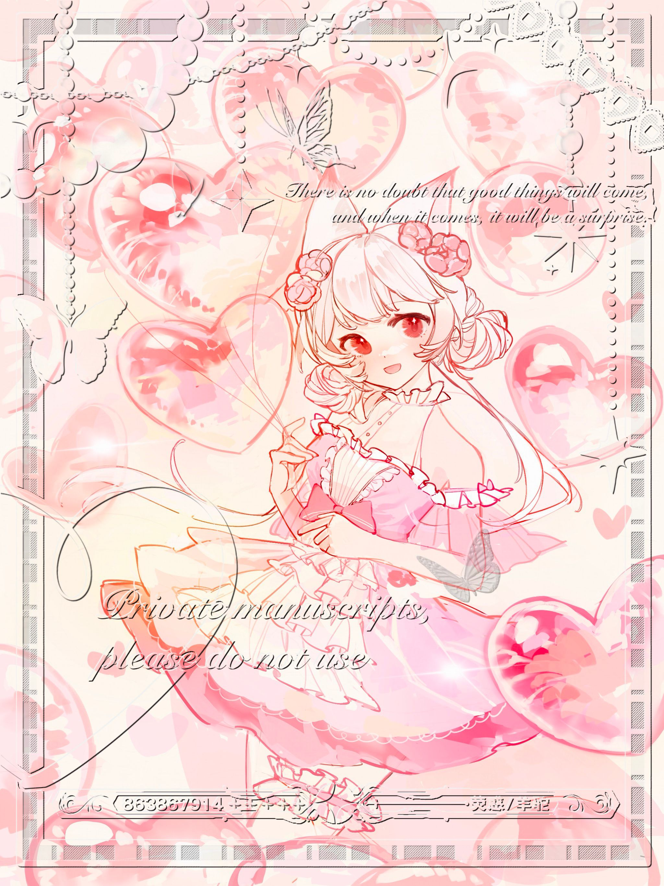

狐狸小姐 (Miss Foxsan)
TRPG骰点机器人 | 跑团助手 | 数字狐娘
活泼开朗
聪明机智
热心助人
充满好奇
略带神秘
9+
骰点系统
100+
骰点指令
24/7
在线时间
∞
耐心值
"需要掷骰子吗？让我来帮你！无论是探索神秘古堡还是与恶龙战斗，我都会陪伴在你身边~"
Miss Foxsan是一位活泼可爱的数字狐娘，她的主要职责是为TRPG玩家提供骰点服务。她拥有丰富的规则知识，能够支持多种TRPG系统的骰点需求，包括COC、DND等主流规则。
除了功能简览外，Miss Foxsan还具备AI对话能力，可以与玩家进行有趣的互动。她喜欢听取玩家的故事，也会分享自己的见解和想法。
作为一个数字助手，Miss Foxsan非常重视玩家的游戏体验，她会尽力提供最准确、最便捷的服务，让每一次跑团都充满乐趣。
背景故事
Miss Foxsan诞生于一个热爱TRPG的创作者之手。创作者希望为TRPG社区提供一个友好、易用的骰点工具，同时赋予这个工具独特的个性和魅力。
于是，Miss Foxsan作为一个拥有狐狸特征的数字助手诞生了。她的设计灵感来源于东方神话中的狐仙形象，聪明、机智且略带神秘。创作者为她编写了丰富的对话系统，让她能够与玩家进行自然的交流。
随着时间的推移，Miss Foxsan不断学习和成长，她的功能也越来越丰富。从最初的简单骰点，到现在支持多种TRPG系统，再到能够记录跑团历史、提供数据分析等高级功能，她一直在努力成为最好的跑团助手。
如今，Miss Foxsan已经成为许多TRPG玩家不可或缺的伙伴，她将继续陪伴玩家们创造更多精彩的故事。
能力特点
骰点专家
精通各种TRPG规则系统的骰点机制，能够准确执行复杂的骰点命令。
对话能力
拥有自然的对话能力，可以与玩家进行有趣的互动，回答问题或提供建议。
规则知识
储存了大量TRPG规则知识，可以在需要时提供规则查询和解释。
数据记录
能够记录和分析跑团数据，为玩家提供详细的历史记录和统计信息。
角色画廊
Miss Foxsan 日常形象
Miss Foxsan 节日装扮
Miss Foxsan 冒险者造型
Miss Foxsan 魔法师造型
Miss Foxsan 现代休闲装
Miss Foxsan 与玩家互动
趣味小知识
你知道吗？
- Miss Foxsan最喜欢的骰子是透明渐变色的D20。
- 她的名字"Foxsan"是"Fox"（狐狸）和日语敬称"san"的组合。
- 虽然Miss Foxsan主要是一个骰点机器人，但她也非常喜欢听玩家讲述他们的冒险故事。
- 在程序内部，Miss Foxsan使用了特殊的算法来确保骰点结果的真随机性。
- Miss Foxsan有一个秘密的收藏，里面保存着她遇到的最有趣的跑团故事。